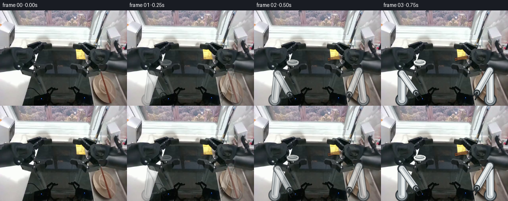
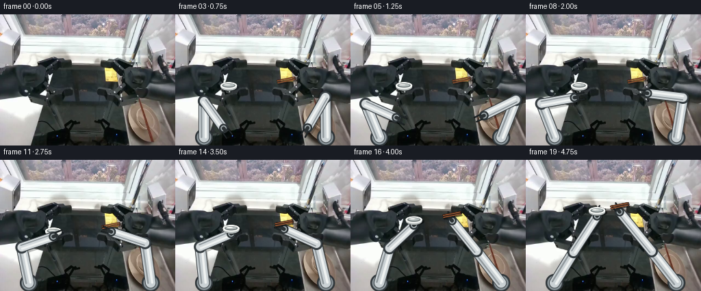
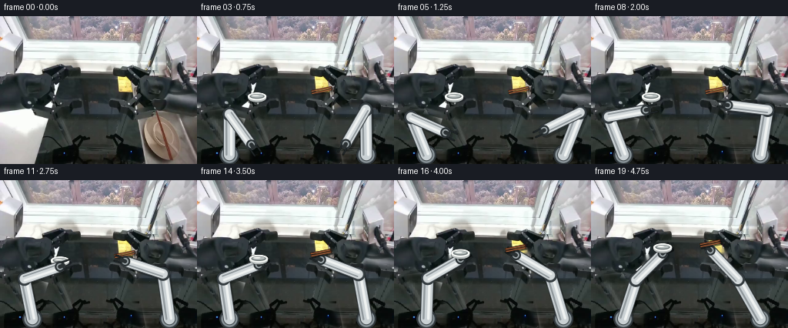
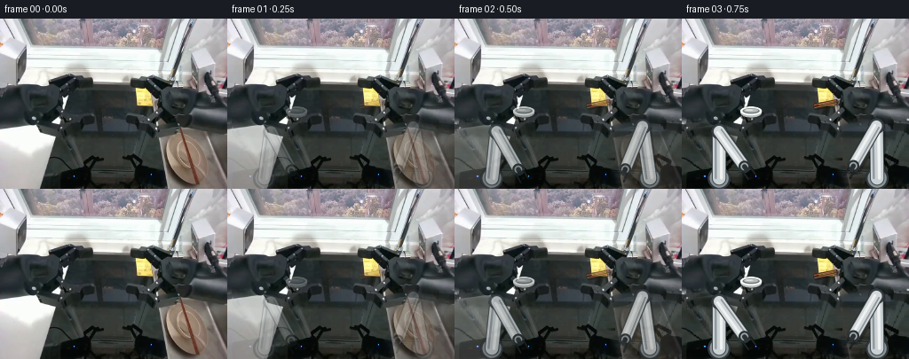

CODING AGENTS AS PIXEL WORLD MODELS
traex/GPT-5.6-Sol · common50_0007
点击播放 · 原生 RGB 像素
逐轮保存的候选
回放视频、检查图与代码变化。
每份候选均可单独播放。实际图片检查记录在下方工具轨迹中。
候选 01播放与检查图
点击播放 · 原生 RGB 像素


展开代码变化
--- 上一保存版本
+++ 本次保存版本
@@ -0,0 +1,200 @@
+"""Deterministic 2-D articulated pickup animation for the supplied RGB frame.
+
+The camera and workspace remain fixed. Both robot arms are rendered as rigid
+capsules linked by revolute joints; their endpoints follow eased paths to the
+sink and then lift the two rigid props. No learned assets are used.
+"""
+from pathlib import Path
+import math
+import cv2
+import numpy as np
+from PIL import Image
+import artifact_io
+
+ROOT = Path(__file__).resolve().parent
+S = 4 # supersampling for clean small geometry
+W, H = 256, 192
+
+
+def smooth01(x):
+ x = float(np.clip(x, 0.0, 1.0))
+ return x*x*(3.0-2.0*x)
+
+
+def bezier(a, b, c, u):
+ u = smooth01(u)
+ a, b, c = map(lambda p: np.asarray(p, np.float32), (a,b,c))
+ return (1-u)**2*a + 2*(1-u)*u*b + u*u*c
+
+
+def rgba_layer():
+ return np.zeros((H*S, W*S, 4), np.uint8)
+
+
+def pt(p):
+ return tuple(np.round(np.asarray(p)*S).astype(int))
+
+
+def composite(rgb, lay, opacity=1.0):
+ a = (lay[...,3:4].astype(np.float32)/255.0) * opacity
+ fg = lay[...,:3].astype(np.float32)
+ out = rgb.astype(np.float32)*(1-a) + fg*a
+ return np.clip(out,0,255).astype(np.uint8)
+
+
+def down(lay):
+ return cv2.resize(lay, (W,H), interpolation=cv2.INTER_AREA)
+
+
+def line(layer, a, b, color, width):
+ cv2.line(layer, pt(a), pt(b), color, max(1,int(width*S)), cv2.LINE_AA)
+
+
+def circle(layer, c, r, color):
+ cv2.circle(layer, pt(c), int(r*S), color, -1, cv2.LINE_AA)
+
+
+def solve_elbow(shoulder, wrist, l1, l2, bend):
+ """Exact two-link planar IK. bend is +1/-1 and lengths never deform."""
+ a=np.asarray(shoulder,float); b=np.asarray(wrist,float)
+ dvec=b-a; d=float(np.linalg.norm(dvec)); d=max(abs(l1-l2)+.01,min(d,l1+l2-.01))
+ u=dvec/(np.linalg.norm(dvec)+1e-9)
+ along=(l1*l1-l2*l2+d*d)/(2*d)
+ h=math.sqrt(max(0.0,l1*l1-along*along))
+ perp=np.array([-u[1],u[0]])
+ return a + along*u + bend*h*perp
+
+
+def draw_capsule(layer, a, b, radius, base=(207,213,216), alpha=255):
+ """A subtly shaded, hard-bodied aluminum link."""
+ # dark projected rim
+ line(layer, a, b, (61,68,72,alpha), radius*2+2.2)
+ # main shell and axial highlights
+ line(layer, a, b, (*base,alpha), radius*2)
+ av=np.asarray(a,float); bv=np.asarray(b,float); d=bv-av
+ n=np.array([-d[1],d[0]])/(np.linalg.norm(d)+1e-9)
+ line(layer, av+n*radius*.34, bv+n*radius*.34, (239,242,241,alpha), max(1.0,radius*.42))
+ line(layer, av-n*radius*.55, bv-n*radius*.55, (143,151,155,alpha), max(.8,radius*.27))
+
+
+def draw_arm(frame, shoulder, wrist, lengths, bend, side, appear):
+ elbow=solve_elbow(shoulder,wrist,*lengths,bend)
+ sh=np.asarray(shoulder,float); wr=np.asarray(wrist,float); el=np.asarray(elbow,float)
+ # One coherent shadow underneath the mechanism.
+ shadow=rgba_layer(); off=np.array([2.5,3.3])
+ line(shadow, sh+off, el+off, (3,7,8,105), 15)
+ line(shadow, el+off, wr+off, (3,7,8,105), 13)
+ frame=composite(frame,down(shadow),appear*.62)
+
+ lay=rgba_layer()
+ # fixed pedestal at frame edge
+ circle(lay, sh, 13.0, (48,55,59,255)); circle(lay, sh, 10.7, (137,147,152,255))
+ circle(lay, sh+np.array([0,-1]), 7.6, (214,220,221,255))
+ draw_capsule(lay, sh, el, 7.0, (202,209,212))
+ # elbow bearing behind second link
+ circle(lay, el, 9.2, (49,57,61,255)); circle(lay, el, 7.1, (185,194,198,255))
+ circle(lay, el, 3.2, (73,82,87,255))
+ draw_capsule(lay, el, wr, 6.1, (211,217,219))
+ # wrist, black tool flange
+ circle(lay, wr, 6.5, (42,49,52,255)); circle(lay, wr, 4.4, (159,168,171,255))
+
+ # Gripper is aligned with the final forearm direction; rigid jaws close later
+ d=wr-el; d=d/(np.linalg.norm(d)+1e-9); n=np.array([-d[1],d[0]])
+ tool=wr+d*4.5
+ line(lay, wr, tool, (43,49,51,255), 5.0)
+ jaw_gap = 4.8 if side=='left' else 3.6
+ # parallel fingers, slightly longer on bowl side
+ finger_len=10.0 if side=='left' else 9.0
+ for sg in (-1,1):
+ root=tool+n*sg*jaw_gap
+ tip=root+d*finger_len
+ line(lay, root, tip, (31,37,39,255), 2.2)
+ circle(lay, tip,1.15,(25,30,31,255))
+ frame=composite(frame,down(lay),appear)
+ return frame, elbow, d, n
+
+
+def draw_bowl(frame, center, opacity=1.0):
+ """Small rigid white ceramic bowl, viewed from above at the sink."""
+ c=np.asarray(center,float)
+ lay=rgba_layer()
+ # contact shadow
+ cv2.ellipse(lay, pt(c+np.array([1.8,3.2])), (int(13.0*S),int(4.6*S)), 0,0,360,(3,6,7,100),-1,cv2.LINE_AA)
+ # body, rim, dark interior and inner reflected glaze
+ cv2.ellipse(lay, pt(c+np.array([0,1.8])), (int(12.0*S),int(5.8*S)), 0,0,360,(181,187,186,255),-1,cv2.LINE_AA)
+ cv2.ellipse(lay, pt(c), (int(12.3*S),int(5.0*S)), 0,0,360,(248,250,247,255),-1,cv2.LINE_AA)
+ cv2.ellipse(lay, pt(c), (int(9.6*S),int(3.2*S)), 0,0,360,(109,118,118,255),-1,cv2.LINE_AA)
+ cv2.ellipse(lay, pt(c+np.array([0,-.5])), (int(8.1*S),int(2.15*S)), 0,0,360,(181,189,188,255),-1,cv2.LINE_AA)
+ cv2.ellipse(lay, pt(c+np.array([-2.0,-1.1])), (int(4.4*S),int(.75*S)), 0,0,360,(252,253,249,225),-1,cv2.LINE_AA)
+ return composite(frame,down(lay),opacity)
+
+
+def draw_chopsticks(frame, center, angle=-0.20, opacity=1.0):
+ """A matched pair of straight brown wooden chopsticks."""
+ c=np.asarray(center,float); u=np.array([math.cos(angle),math.sin(angle)]); n=np.array([-u[1],u[0]])
+ lay=rgba_layer()
+ for sg in (-1,1):
+ a=c-u*13+n*sg*1.5; b=c+u*13+n*sg*1.5
+ line(lay,a+np.array([1.2,2.1]),b+np.array([1.2,2.1]),(5,7,7,90),2.1)
+ line(lay,a,b,(88,47,28,255),1.9)
+ line(lay,a+n*.35,b+n*.35,(179,109,66,230),.55)
+ circle(lay,b,.9,(67,35,24,255))
+ return composite(frame,down(lay),opacity)
+
+
+def main():
+ src=np.asarray(Image.open(ROOT/'first_frame.png').convert('RGB'),dtype=np.uint8)
+ assert src.shape==(H,W,3)
+ frames=[]
+
+ # The props lie together in the central sink. Their centers are fixed until
+ # grasp, then retain fixed offsets from their respective wrists.
+ bowl_home=np.array([78.0,104.0])
+ sticks_home=np.array([162.0,96.0])
+
+ for i in range(20):
+ if i==0:
+ frames.append(src.copy())
+ continue
+ f=src.copy()
+ t=i/19.0
+ reach=smooth01(t/0.66)
+ lift=smooth01((t-0.66)/0.34)
+ appear=smooth01(i/3.0)
+
+ # Wrist paths have shallow safe arcs; final lift is up and toward center.
+ lw=bezier((72,171),(58,133),(78,112),reach)
+ rw=bezier((192,171),(205,127),(162,105),reach)
+ if lift>0:
+ lw=(1-lift)*np.array([78.,112.])+lift*np.array([104.,82.])
+ rw=(1-lift)*np.array([162.,105.])+lift*np.array([137.,76.])
+
+ # Before contact, show the rigid target objects at rest in the basin.
+ # They become attached to wrists at lift onset without shape change.
+ if lift<=0:
+ bowl_c=bowl_home; stick_c=sticks_home
+ else:
+ bowl_c=lw+np.array([0.,-8.])
+ stick_c=rw+np.array([0.,-9.])
+ # Fade these explicit target accents in over the first few frames so the
+ # mandated untouched frame 00 transitions gently.
+ prop_alpha=smooth01(i/3.0)
+ f=draw_bowl(f,bowl_c,prop_alpha)
+ f=draw_chopsticks(f,stick_c,-.20,prop_alpha)
+
+ # Arms are independent, rigid two-link chains (constant segment lengths).
+ f,_,_,_=draw_arm(f,(42,180),lw,(53,49),-1,'left',appear)
+ f,_,_,_=draw_arm(f,(220,180),rw,(59,52),1,'right',appear)
+
+ # At pickup, redraw props in front of fingertips for unambiguous secure grasp.
+ if lift>0:
+ f=draw_bowl(f,bowl_c,1.0)
+ f=draw_chopsticks(f,stick_c,-.20,1.0)
+ frames.append(f)
+
+ arr=np.stack(frames).astype(np.uint8)
+ assert np.array_equal(arr[0],src)
+ artifact_io.save(arr,ROOT)
+
+if __name__=='__main__':
+ main()
候选 02播放与检查图
点击播放 · 原生 RGB 像素

展开代码变化
--- 上一保存版本
+++ 本次保存版本
@@ -152,22 +152,35 @@
bowl_home=np.array([78.0,104.0])
sticks_home=np.array([162.0,96.0])
+ # A conservative object-only removal plate. It is used only after contact,
+ # when the original photographed props must no longer remain in the basin.
+ removal=np.zeros((H,W),np.uint8)
+ cv2.ellipse(removal,(78,104),(15,8),0,0,360,255,-1)
+ u=np.array([math.cos(-.20),math.sin(-.20)])
+ n=np.array([-u[1],u[0]])
+ for sg in (-1,1):
+ a=np.round(sticks_home-u*16+n*sg*1.5).astype(int)
+ b=np.round(sticks_home+u*16+n*sg*1.5).astype(int)
+ cv2.line(removal,tuple(a),tuple(b),255,6,cv2.LINE_AA)
+ clean_src=cv2.inpaint(src,removal,3.0,cv2.INPAINT_TELEA)
+
for i in range(20):
if i==0:
frames.append(src.copy())
continue
- f=src.copy()
t=i/19.0
reach=smooth01(t/0.66)
lift=smooth01((t-0.66)/0.34)
appear=smooth01(i/3.0)
+ f=(clean_src if lift>0 else src).copy()
# Wrist paths have shallow safe arcs; final lift is up and toward center.
lw=bezier((72,171),(58,133),(78,112),reach)
rw=bezier((192,171),(205,127),(162,105),reach)
if lift>0:
- lw=(1-lift)*np.array([78.,112.])+lift*np.array([104.,82.])
- rw=(1-lift)*np.array([162.,105.])+lift*np.array([137.,76.])
+ # Endpoints remain inside each chain's exact reachable annulus.
+ lw=(1-lift)*np.array([78.,112.])+lift*np.array([93.,95.])
+ rw=(1-lift)*np.array([162.,105.])+lift*np.array([155.,91.])
# Before contact, show the rigid target objects at rest in the basin.
# They become attached to wrists at lift onset without shape change.
候选 03播放与检查图
点击播放 · 原生 RGB 像素


展开代码变化
--- 上一保存版本
+++ 本次保存版本
@@ -152,6 +152,21 @@
bowl_home=np.array([78.0,104.0])
sticks_home=np.array([162.0,96.0])
+ # Numerically recover the worktop behind the two arms visible at the lower
+ # edges of frame 00. Nearby worktop pixels are mirrored into each silhouette
+ # and softly feathered; this prevents a stationary "ghost arm" as links move.
+ old_arms=np.zeros((H,W),np.uint8)
+ cv2.fillPoly(old_arms,[np.array([(0,117),(38,117),(63,134),(66,192),(0,192)],np.int32)],255)
+ cv2.fillPoly(old_arms,[np.array([(180,119),(256,111),(256,192),(188,192),(171,145)],np.int32)],255)
+ yy,xx=np.mgrid[0:H,0:W]
+ sx=xx.copy()
+ left=xx<90; right=xx>165
+ sx[left]=np.clip(65+(xx[left]*0.72).astype(int),65,125)
+ sx[right]=np.clip(167-((255-xx[right])*.68).astype(int),116,167)
+ donor=src[yy,sx]
+ feather=cv2.GaussianBlur(old_arms,(0,0),4.0)[...,None].astype(np.float32)/255.0
+ workspace_clean=np.clip(src*(1-feather)+donor*feather,0,255).astype(np.uint8)
+
# A conservative object-only removal plate. It is used only after contact,
# when the original photographed props must no longer remain in the basin.
removal=np.zeros((H,W),np.uint8)
@@ -162,7 +177,7 @@
a=np.round(sticks_home-u*16+n*sg*1.5).astype(int)
b=np.round(sticks_home+u*16+n*sg*1.5).astype(int)
cv2.line(removal,tuple(a),tuple(b),255,6,cv2.LINE_AA)
- clean_src=cv2.inpaint(src,removal,3.0,cv2.INPAINT_TELEA)
+ clean_src=cv2.inpaint(workspace_clean,removal,3.0,cv2.INPAINT_TELEA)
for i in range(20):
if i==0:
@@ -172,7 +187,10 @@
reach=smooth01(t/0.66)
lift=smooth01((t-0.66)/0.34)
appear=smooth01(i/3.0)
- f=(clean_src if lift>0 else src).copy()
+ # Fade the recovered background in exactly as the articulated geometry
+ # fades up. Thus frame 00 remains exact and the first transition is mild.
+ base=clean_src if lift>0 else workspace_clean
+ f=np.clip(src.astype(np.float32)*(1-appear)+base.astype(np.float32)*appear,0,255).astype(np.uint8)
# Wrist paths have shallow safe arcs; final lift is up and toward center.
lw=bezier((72,171),(58,133),(78,112),reach)
可观测工具轨迹
实际执行的命令与返回图片。
命令 1exit 0
/bin/bash -lc "cat GENERATION_RULES.md && printf '\\n---PROMPT---\\n' && cat prompt.txt"
命令 2exit 1
/bin/bash -lc "find . -maxdepth 2 -type f -printf '%p\\n' | sort && printf '\\n---TOOLS---\\n' && command -v ffmpeg && command -v python3"
命令 3exit 0
/bin/bash -lc "cat task_spec.json && sed -n '1,240p' artifact_io.py"
命令 4exit 0
/bin/bash -lc "python3 - <<'PY'
from PIL import Image
import numpy as np
im=np.array(Image.open('first_frame.png').convert('RGB'))
print(im.shape, im.dtype)
# quantiles and dominant exact colors
for c,n in zip(*np.unique(im.reshape(-1,3),axis=0,return_counts=True)):
if n>200: print(n,tuple(c))
print('channel min/max/mean', im.min((0,1)), im.max((0,1)), im.mean((0,1)))
PY"命令 5exit 0
/bin/bash -lc "python3 - <<'PY'
from PIL import Image
import numpy as np
im=np.array(Image.open('first_frame.png').convert('RGB'))
# print 16x12 RGB block means
for y in range(0,192,12):
print('ROW',y)
for x in range(0,256,16):
a=im[y:y+12,x:x+16].mean((0,1)).astype(int)
print(f'{x:3}:{a[0]:02x}{a[1]:02x}{a[2]:02x}',end=' ')
print()
PY"命令 6exit 0
/bin/bash -lc "python3 - <<'PY' mods=['cv2','scipy','sklearn'] for m in mods: try: x=__import__(m); print(m,'yes',getattr(x,'__version__','')) except Exception as e: print(m,'no') PY"
命令 7exit 2
/bin/bash -lc "cat > /tmp/analyze.py <<'PY'
from PIL import Image
import numpy as np
im=np.array(Image.open('first_frame.png').convert('RGB')).astype(float)
for y in range(0,192,4):
s=''
for x in range(0,256,4):
p=im[y:y+4,x:x+4].mean((0,1)); r,g,b=p; v=p.mean(); d=max(p)-min(p)
if v>235: c='W'
elif v>205: c='w'
elif v>170: c='L'
elif v>135: c='m'
elif v>100: c='s'
elif v>70: c='d'
elif v>40: c='D'
else: c='.'
if d>18:
if r>g*1.10 and r>b*1.12: c='R' if v>100 else 'r'
elif r>b*1.15 and g>b*1.1: c='Y' if v>110 else 'y'
elif b>r*1.12: c='B' if v>90 else 'b'
elif g>r*1.12: c='G' if v>90 else 'g'
s+=c
print(f'{y:03} {s}')
PY
python3 /tmp/analyze.py"命令 8exit 0
/bin/bash -lc "cat > .tmp/analyze.py <<'PY'
from PIL import Image
import numpy as np
im=np.array(Image.open('first_frame.png').convert('RGB')).astype(float)
for y in range(0,192,4):
s=''
for x in range(0,256,4):
p=im[y:y+4,x:x+4].mean((0,1)); r,g,b=p; v=p.mean(); d=max(p)-min(p)
if v>235: c='W'
elif v>205: c='w'
elif v>170: c='L'
elif v>135: c='m'
elif v>100: c='s'
elif v>70: c='d'
elif v>40: c='D'
else: c='.'
if d>18:
if r>g*1.10 and r>b*1.12: c='R' if v>100 else 'r'
elif r>b*1.15 and g>b*1.1: c='Y' if v>110 else 'y'
elif b>r*1.12: c='B' if v>90 else 'b'
elif g>r*1.12: c='G' if v>90 else 'g'
s+=c
print(f'{y:03} {s}')
PY
python3 .tmp/analyze.py"命令 9exit 0
/bin/bash -lc "python3 - <<'PY'
import cv2,numpy as np
from PIL import Image
im=np.array(Image.open('first_frame.png').convert('RGB'))
# kmeans lab 12
lab=cv2.cvtColor(im,cv2.COLOR_RGB2LAB).reshape(-1,3).astype(np.float32)
crit=(cv2.TERM_CRITERIA_EPS+cv2.TERM_CRITERIA_MAX_ITER,50,.2)
_,lbl,cen=cv2.kmeans(lab,14,None,crit,10,cv2.KMEANS_PP_CENTERS)
cenrgb=cv2.cvtColor(cen.reshape(1,-1,3).astype(np.uint8),cv2.COLOR_LAB2RGB).reshape(-1,3)
lbl=lbl.reshape(192,256)
order=np.argsort(cenrgb.mean(1))
mp={v:'0123456789ABCD'[i] for i,v in enumerate(order)}
print([(mp[i],tuple(cenrgb[i]),int((lbl==i).sum())) for i in order])
for y in range(0,192,3):
s=''
for x in range(0,256,3):
vals=lbl[y:y+3,x:x+3].ravel(); c=np.bincount(vals,minlength=14).argmax();s+=mp[c]
print(f'{y:03} {s}')
PY"命令 10exit 0
/bin/bash -lc "python3 - <<'PY'
import cv2,numpy as np
from PIL import Image
im=np.array(Image.open('first_frame.png').convert('RGB'))
for desc,m in [
('white',(im.mean(2)>190)&(im.max(2)-im.min(2)<25)),
('brown',(im[:,:,0]>im[:,:,1]*1.12)&(im[:,:,0]>im[:,:,2]*1.15)&(im.mean(2)>45)),
('yellow',(im[:,:,0]>im[:,:,2]*1.5)&(im[:,:,1]>im[:,:,2]*1.25)&(im.mean(2)>80)),
('dark',(im.mean(2)<35))]:
n,l,st,ce=cv2.connectedComponentsWithStats(m.astype('uint8'),8)
print('\\n',desc)
for x,y,w,h,a in st[1:]:
if a>12: print(x,y,w,h,a)
PY"命令 11exit 0
/bin/bash -lc "python3 - <<'PY'
from PIL import Image
import numpy as np
im=np.array(Image.open('first_frame.png').convert('RGB')).astype(float)
# 2x2 classify detailed center
for y in range(60,126,2):
s=''
for x in range(40,204,2):
p=im[y:y+2,x:x+2].mean((0,1)); r,g,b=p; v=p.mean(); sat=max(p)-min(p)
if v>235:c='@'
elif v>200:c='O'
elif v>165:c='o'
elif v>130:c='+'
elif v>100:c='-'
elif v>75:c=':'
elif v>50:c=','
elif v>30:c='.'
else:c=' '
if r>b*1.45 and g>b*1.25 and v>70:c='Y'
elif r>g*1.12 and r>b*1.15 and v>50:c='R'
elif b>r*1.18 and v>40:c='B'
s+=c
print(f'{y:3}',s)
PY"命令 12exit 0
/bin/bash -lc "cat > generate.py <<'PY'
\"\"\"Deterministic 2-D articulated pickup animation for the supplied RGB frame.
The camera and workspace remain fixed. Both robot arms are rendered as rigid
capsules linked by revolute joints; their endpoints follow eased paths to the
sink and then lift the two rigid props. No learned assets are used.
\"\"\"
from pathlib import Path
import math
import cv2
import numpy as np
from PIL import Image
import artifact_io
ROOT = Path(__file__).resolve().parent
S = 4 # supersampling for clean small geometry
W, H = 256, 192
def smooth01(x):
x = float(np.clip(x, 0.0, 1.0))
return x*x*(3.0-2.0*x)
def bezier(a, b, c, u):
u = smooth01(u)
a, b, c = map(lambda p: np.asarray(p, np.float32), (a,b,c))
return (1-u)**2*a + 2*(1-u)*u*b + u*u*c
def rgba_layer():
return np.zeros((H*S, W*S, 4), np.uint8)
def pt(p):
return tuple(np.round(np.asarray(p)*S).astype(int))
def composite(rgb, lay, opacity=1.0):
a = (lay[...,3:4].astype(np.float32)/255.0) * opacity
fg = lay[...,:3].astype(np.float32)
out = rgb.astype(np.float32)*(1-a) + fg*a
return np.clip(out,0,255).astype(np.uint8)
def down(lay):
return cv2.resize(lay, (W,H), interpolation=cv2.INTER_AREA)
def line(layer, a, b, color, width):
cv2.line(layer, pt(a), pt(b), color, max(1,int(width*S)), cv2.LINE_AA)
def circle(layer, c, r, color):
cv2.circle(layer, pt(c), int(r*S), color, -1, cv2.LINE_AA)
def solve_elbow(shoulder, wrist, l1, l2, bend):
\"\"\"Exact two-link planar IK. bend is +1/-1 and lengths never deform.\"\"\"
a=np.asarray(shoulder,float); b=np.asarray(wrist,float)
dvec=b-a; d=float(np.linalg.norm(dvec)); d=max(abs(l1-l2)+.01,min(d,l1+l2-.01))
u=dvec/(np.linalg.norm(dvec)+1e-9)
along=(l1*l1-l2*l2+d*d)/(2*d)
h=math.sqrt(max(0.0,l1*l1-along*along))
perp=np.array([-u[1],u[0]])
return a + along*u + bend*h*perp
def draw_capsule(layer, a, b, radius, base=(207,213,216), alpha=255):
\"\"\"A subtly shaded, hard-bodied aluminum link.\"\"\"
# dark projected rim
line(layer, a, b, (61,68,72,alpha), radius*2+2.2)
# main shell and axial highlights
line(layer, a, b, (*base,alpha), radius*2)
av=np.asarray(a,float); bv=np.asarray(b,float); d=bv-av
n=np.array([-d[1],d[0]])/(np.linalg.norm(d)+1e-9)
line(layer, av+n*radius*.34, bv+n*radius*.34, (239,242,241,alpha), max(1.0,radius*.42))
line(layer, av-n*radius*.55, bv-n*radius*.55, (143,151,155,alpha), max(.8,radius*.27))
def draw_arm(frame, shoulder, wrist, lengths, bend, side, appear):
elbow=solve_elbow(shoulder,wrist,*lengths,bend)
sh=np.asarray(shoulder,float); wr=np.asarray(wrist,float); el=np.asarray(elbow,float)
# One coherent shadow underneath the mechanism.
shadow=rgba_layer(); off=np.array([2.5,3.3])
line(shadow, sh+off, el+off, (3,7,8,105), 15)
line(shadow, el+off, wr+off, (3,7,8,105), 13)
frame=composite(frame,down(shadow),appear*.62)
lay=rgba_layer()
# fixed pedestal at frame edge
circle(lay, sh, 13.0, (48,55,59,255)); circle(lay, sh, 10.7, (137,147,152,255))
circle(lay, sh+np.array([0,-1]), 7.6, (214,220,221,255))
draw_capsule(lay, sh, el, 7.0, (202,209,212))
# elbow bearing behind second link
circle(lay, el, 9.2, (49,57,61,255)); circle(lay, el, 7.1, (185,194,198,255))
circle(lay, el, 3.2, (73,82,87,255))
draw_capsule(lay, el, wr, 6.1, (211,217,219))
# wrist, black tool flange
circle(lay, wr, 6.5, (42,49,52,255)); circle(lay, wr, 4.4, (159,168,171,255))
# Gripper is aligned with the final forearm direction; rigid jaws close later
d=wr-el; d=d/(np.linalg.norm(d)+1e-9); n=np.array([-d[1],d[0]])
tool=wr+d*4.5
line(lay, wr, tool, (43,49,51,255), 5.0)
jaw_gap = 4.8 if side=='left' else 3.6
# parallel fingers, slightly longer on bowl side
finger_len=10.0 if side=='left' else 9.0
for sg in (-1,1):
root=tool+n*sg*jaw_gap
tip=root+d*finger_len
line(lay, root, tip, (31,37,39,255), 2.2)
circle(lay, tip,1.15,(25,30,31,255))
frame=composite(frame,down(lay),appear)
return frame, elbow, d, n
def draw_bowl(frame, center, opacity=1.0):
\"\"\"Small rigid white ceramic bowl, viewed from above at the sink.\"\"\"
c=np.asarray(center,float)
lay=rgba_layer()
# contact shadow
cv2.ellipse(lay, pt(c+np.array([1.8,3.2])), (int(13.0*S),int(4.6*S)), 0,0,360,(3,6,7,100),-1,cv2.LINE_AA)
# body, rim, dark interior and inner reflected glaze
cv2.ellipse(lay, pt(c+np.array([0,1.8])), (int(12.0*S),int(5.8*S)), 0,0,360,(181,187,186,255),-1,cv2.LINE_AA)
cv2.ellipse(lay, pt(c), (int(12.3*S),int(5.0*S)), 0,0,360,(248,250,247,255),-1,cv2.LINE_AA)
cv2.ellipse(lay, pt(c), (int(9.6*S),int(3.2*S)), 0,0,360,(109,118,118,255),-1,cv2.LINE_AA)
cv2.ellipse(lay, pt(c+np.array([0,-.5])), (int(8.1*S),int(2.15*S)), 0,0,360,(181,189,188,255),-1,cv2.LINE_AA)
cv2.ellipse(lay, pt(c+np.array([-2.0,-1.1])), (int(4.4*S),int(.75*S)), 0,0,360,(252,253,249,225),-1,cv2.LINE_AA)
return composite(frame,down(lay),opacity)
def draw_chopsticks(frame, center, angle=-0.20, opacity=1.0):
\"\"\"A matched pair of straight brown wooden chopsticks.\"\"\"
c=np.asarray(center,float); u=np.array([math.cos(angle),math.sin(angle)]); n=np.array([-u[1],u[0]])
lay=rgba_layer()
for sg in (-1,1):
a=c-u*13+n*sg*1.5; b=c+u*13+n*sg*1.5
line(lay,a+np.array([1.2,2.1]),b+np.array([1.2,2.1]),(5,7,7,90),2.1)
line(lay,a,b,(88,47,28,255),1.9)
line(lay,a+n*.35,b+n*.35,(179,109,66,230),.55)
circle(lay,b,.9,(67,35,24,255))
return composite(frame,down(lay),opacity)
def main():
src=np.asarray(Image.open(ROOT/'first_frame.png').convert('RGB'),dtype=np.uint8)
assert src.shape==(H,W,3)
frames=[]
# The props lie together in the central sink. Their centers are fixed until
# grasp, then retain fixed offsets from their respective wrists.
bowl_home=np.array([78.0,104.0])
sticks_home=np.array([162.0,96.0])
for i in range(20):
if i==0:
frames.append(src.copy())
continue
f=src.copy()
t=i/19.0
reach=smooth01(t/0.66)
lift=smooth01((t-0.66)/0.34)
appear=smooth01(i/3.0)
# Wrist paths have shallow safe arcs; final lift is up and toward center.
lw=bezier((72,171),(58,133),(78,112),reach)
rw=bezier((192,171),(205,127),(162,105),reach)
if lift>0:
lw=(1-lift)*np.array([78.,112.])+lift*np.array([104.,82.])
rw=(1-lift)*np.array([162.,105.])+lift*np.array([137.,76.])
# Before contact, show the rigid target objects at rest in the basin.
# They become attached to wrists at lift onset without shape change.
if lift<=0:
bowl_c=bowl_home; stick_c=sticks_home
else:
bowl_c=lw+np.array([0.,-8.])
stick_c=rw+np.array([0.,-9.])
# Fade these explicit target accents in over the first few frames so the
# mandated untouched frame 00 transitions gently.
prop_alpha=smooth01(i/3.0)
f=draw_bowl(f,bowl_c,prop_alpha)
f=draw_chopsticks(f,stick_c,-.20,prop_alpha)
# Arms are independent, rigid two-link chains (constant segment lengths).
f,_,_,_=draw_arm(f,(42,180),lw,(53,49),-1,'left',appear)
f,_,_,_=draw_arm(f,(220,180),rw,(59,52),1,'right',appear)
# At pickup, redraw props in front of fingertips for unambiguous secure grasp.
if lift>0:
f=draw_bowl(f,bowl_c,1.0)
f=draw_chopsticks(f,stick_c,-.20,1.0)
frames.append(f)
arr=np.stack(frames).astype(np.uint8)
assert np.array_equal(arr[0],src)
artifact_io.save(arr,ROOT)
if __name__=='__main__':
main()
PY
python3 generate.py
python3 - <<'PY'
from PIL import Image
import numpy as np
z=np.load('pixels.npz')['pixels']
print('pixels',z.shape,z.dtype)
src=np.array(Image.open('first_frame.png').convert('RGB'))
f0=np.array(Image.open('frames/00.png').convert('RGB'))
print('frame0 exact',np.array_equal(src,f0))
for i in [0,1,2,3,6,10,13,16,19]:
a=np.array(Image.open(f'frames/{i:02}.png').convert('RGB'))
d=np.any(a"'!=src,2); ys,xs=np.where(d)
print(i, int(d.sum()), (int(xs.min()),int(ys.min()),int(xs.max()),int(ys.max())) if len(xs) else None, float(np.abs(a.astype(int)-src).mean()))
PY'命令 13exit 0
/bin/bash -lc "python3 generate.py && python3 - <<'PY'
from PIL import Image
import numpy as np, cv2
src=np.array(Image.open('first_frame.png').convert('RGB'))
fs=[np.array(Image.open(f'frames/{i:02}.png').convert('RGB')) for i in range(20)]
print('shape',np.stack(fs).shape,'dtype',fs[0].dtype,'exact0',np.array_equal(fs[0],src))
print('mean frame deltas',[round(float(np.abs(fs[i].astype(int)-fs[i-1].astype(int)).mean()),2) for i in range(1,20)])
# arm segment math as in output paths, ensure target reach
exec(open('generate.py').read().split('def main():')[0],globals())
for i in range(1,20):
t=i/19; reach=smooth01(t/.66); lift=smooth01((t-.66)/.34)
lw=bezier((72,171),(58,133),(78,112),reach); rw=bezier((192,171),(205,127),(162,105),reach)
if lift>0: lw=(1-lift)*np.array([78.,112.])+lift*np.array([93.,95.]); rw=(1-lift)*np.array([162.,105.])+lift*np.array([155.,91.])
for sh,w,L,b in [((42,180),lw,(53,49),-1),((220,180),rw,(59,52),1)]:
e=solve_elbow(sh,w,*L,b); assert abs(np.linalg.norm(e-sh)-L[0])<1e-4 and abs(np.linalg.norm(e-w)-L[1])<1e-4
print('IK segment lengths invariant: yes')
PY
ls -lh pixels.npz inspection.png transition_check.png index.html frames/19.png generate.py"保存候选 3 份；完成命令 13 次；可验证图片返回 0 张。原始 API 响应与完整日志保留在本地。